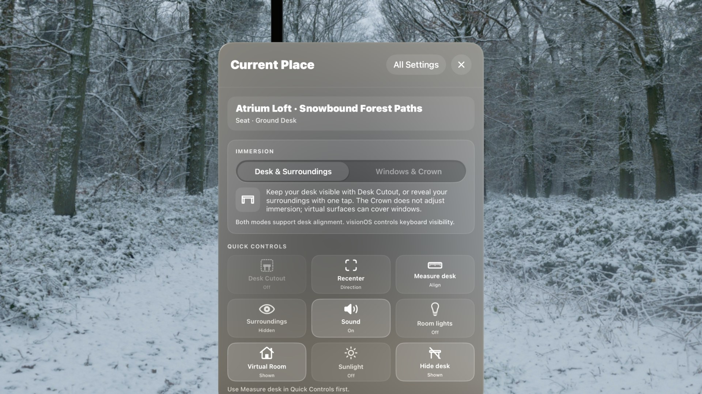
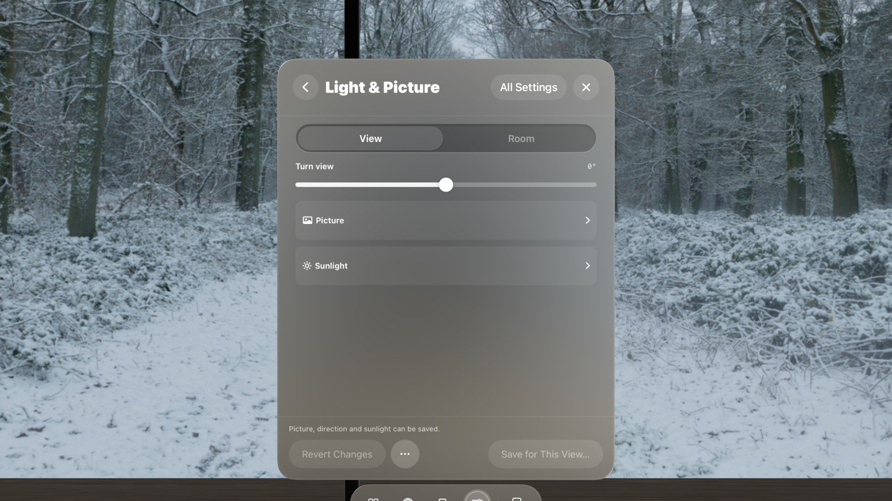
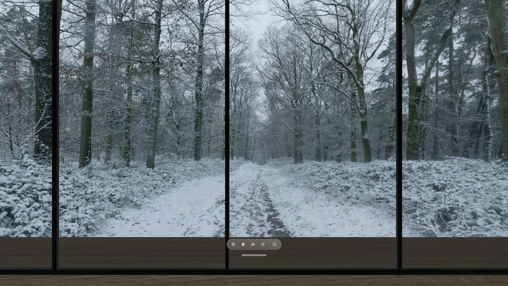
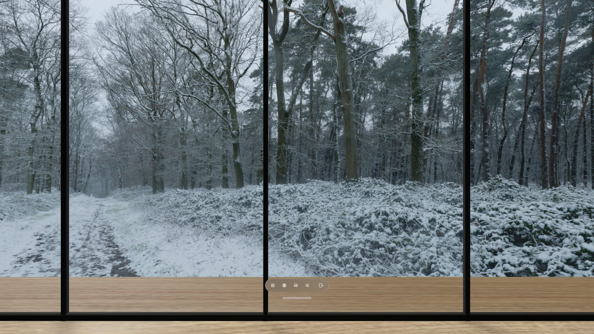
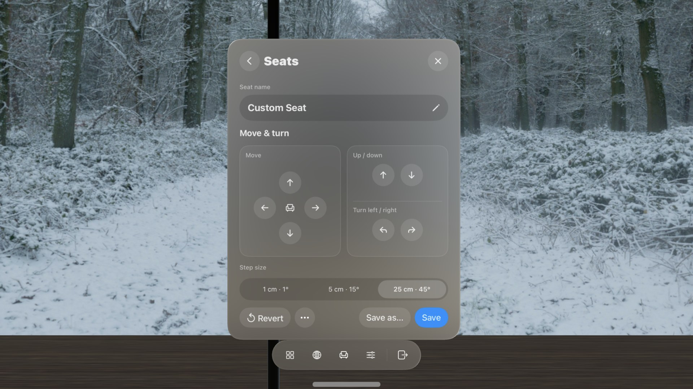

Customization · 10 minutes
Customize your Place.
Use Quick Controls when you need an instant switch, then shape the View, the Room, and where you sit without leaving your Place. Keep the result for this session or save it for next time.
Start with Quick Controls
Choose Settings in the Locus bar. Current Place opens with your immersion choice at the top and Quick Controls below it—one tap switches for the Place you are in. The tiles depend on the Room and View.

Choose Edit Quick Controls to hide or reorder tiles. To keep a switch on the bar itself, choose All Settings → Workspace → Customize Bar.
Customize the View
In Current Place, choose Light & Picture, then the View tab. Adjust one control at a time while looking at both the panorama and the Room.

- Turn view rotates the panorama around you. Use it to place the main subject in front of your seat or align a horizon feature with the Room.
- Picture holds Sky brightness, which changes how bright the panorama itself looks; Ambient light, which changes how strongly the View lights the Room without changing the sky image; Contrast; and Color.
- Sunlight holds Add Sunlight. When it is on, set the light's direction, color, and strength to match the light visible in the panorama.
- Sound (when the View carries ambience) sets the scenery's volume. When the Room has its own background sound, the View starts at 25% so the two mix; adjust it to taste.
- Motion (for Animated Views) has Play Video. Turn it off and save to keep that View still every time.
Example: turn an overcast View and add light
This pair uses the same Atrium Loft seat and the same Snowbound Forest Paths View. The second image applies Turn view +35° and switches on Add Sunlight.


Look for two separate changes: Turn view moves the path toward the left side of the Room; Add Sunlight brightens the 3D floor. It does not redraw the overcast panorama.
Customize the Room
Choose the Room tab in Light & Picture when the selected Room offers visitor-controlled lights. Sound and Motion have their own Room tabs when the Room carries sound or animation.
- Switch on Room lights. This is the same switch as the Quick Controls tile. You can also look at a lamp in the Room and pinch it to switch just that lamp.
- Adjust All lights. Brighten or dim the Room's supported lights together.
- Tune individual lights. A Room may offer brightness, warmth, or full color for some fixtures. Locus shows only the controls that Room supports.
- Adjust Room sound in Sound when the Room carries its own ambience—separate from View sound, with its own switch and volume.
- Adjust supported ambient motion in Motion. Experimental Rooms can offer an animation switch, speed, and replay interval.
If the light switch is off, brightness and color changes remain ready and appear when you switch the lights back on.
Customize the Seat
Choose Seats in the bar. Pick any seat the Room offers, adjust the one you are in, or add seats of your own.

Move the seat you are in
- Choose Move Seat.
- Step or turn. Move forward, back, sideways, up, or down, or turn. Pick a step size of 1 cm · 1°, 5 cm · 15°, or 25 cm · 45°.
- Choose Save to keep that position for this seat next time, or Save as… → Save as a New Seat to keep the original seat and add a new one. Revert undoes unsaved moves.
Add your own seat
- Choose Add Seat. The new seat starts where you are.
- Name it with the pencil button—up to 40 characters.
- Use Move & turn to place it, then choose Save.
Your own seats appear in Seats and get a marker in the Room while Seats is open, and each Room keeps up to 20. They have no desk, so desk measuring and Desk Cutout do not apply there. Use a seat's More menu to rename or delete it. If a Room update changes its shape, Locus asks you to reposition affected seats instead of deleting them.
Save or undo changes
Changes in Light & Picture, Sound, and Motion begin as a temporary working copy. Use the actions at the bottom of the page to decide what happens next.
- Revert Changes returns the active tab to your saved settings.
- More (…) → Try Original Settings previews the creator's published settings without saving them.
- Save for This View… makes the current View settings that View's default in every Room and experience on this device.
- Save for This Room… keeps supported Room light and motion settings for that Room on this device.
Not ready to commit? Close Settings and keep using the Place. Unsaved adjustments remain session changes rather than replacing the saved defaults.
For a larger preview before saving a View, open Places, open the View card's … menu, then choose Edit View. It works with the same saved View appearance.
Organize Places
- Mark a Room or View as a Favorite with the star on its card.
- Add tags such as Work, Night, Nature, or Shared with Edit Tags… in the card's … menu.
- Filter with the row under the tabs: On Device, Animated, With Sound, access, and source. Clear Filters resets them.
- Sort by Title or Recently Added from the menu at the right. Favorites First in the same menu keeps favorites at the top in either order.
- Rename an imported View in Edit View when its filename is not useful. Built-in Views keep their published names.
- Update a card when a newer version is available, or choose Update All at the top of Places.
Names, favorites, and tags organize Places. They do not change the imported panorama or Room files. About This View and About This Room in the card menu show credits, version, size, and access.